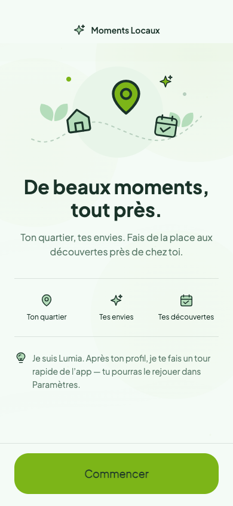
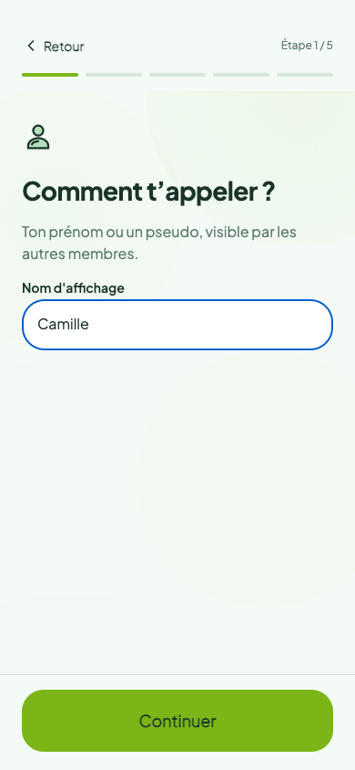
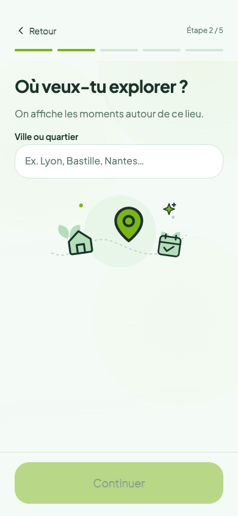
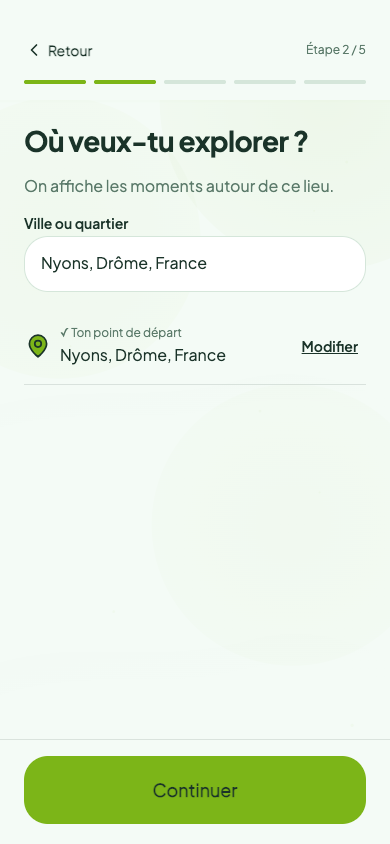
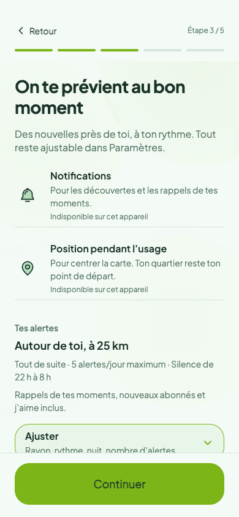
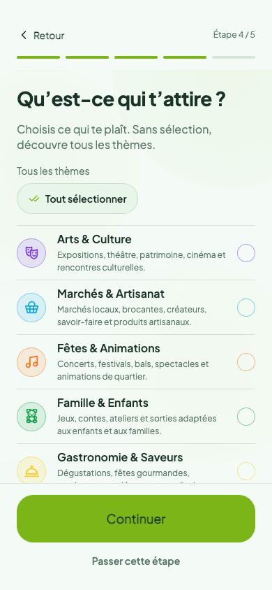
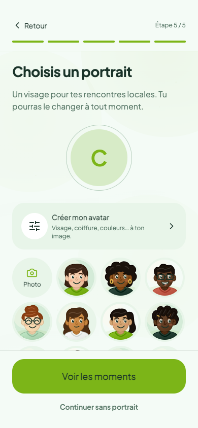
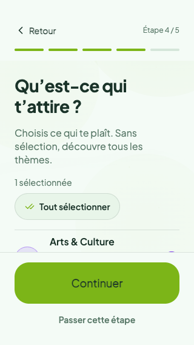
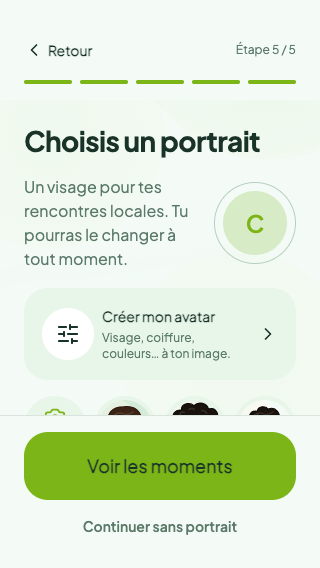

ONBOARDING-001 · Captures des composants de l’application, avec données simulées. Charte menthe, encre et anis. Les dialogues système et le clavier restent à vérifier sur iOS et Android.








